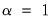

Principal components analysis models the variance structure of a set of observed variables using linear combinations of the variables. These linear combinations, or components, may be used in subsequent analysis, and the combination coefficients, or
loadings, may be used in interpreting the components. While we generally require as many components as variables to reproduce the original variance structure, we usually hope to account for most of the original variability using a relatively small number of components.
The principal components dialog has two tabs. Here, we have selected the first tab, labeled . The second tab, labeled controls the computation of the dispersion matrix from the series in the group. By default, EViews will perform principal components on the ordinary (Pearson)
correlation matrix, but you may use the settings on this tab to modify the preliminary calculation. We will examine this tab in greater detail in
“Covariance Calculation”.
The tab is used to specify options for displaying the components or saving the eigenvalues and eigenvectors of the variances.
The box allows you to choose between showing the eigenvalues and eigenvectors in a tabular form, or displaying line graphs of the ordered eigenvalues, or scatterplots of the loadings, scores, or both (biplot). As you select different display methods, the remainder of the dialog will change to provide you with different settings.
In the figure above, the display setting is chosen. There are two sets of fields that you may wish to modify.
The dropdown lets you choose between the , , and . In turn, each of these choices offers different options.
|
•
|
If you select , you will choose a from the dropdown. You may choose from the following selections: , , .
|
The dropdown offers all of the information criteria described by Bai and Ng (, , , , , ) as well as the which averages the criteria prior to determining the optimal number of factors.
|
•
|
If you select , EViews will compute the Ahn and Horenstein (2013) number of factor determination procedure ( “Ahn and Horenstein”). The dialog looks the same as for , but the dropdown now offers , , and .
|
|
•
|
For , the number of factors is specified by the user in the edit box
|
|
•
|
: let there be a lag choice function  for  and let  ; then returns the value  . |
|
•
|
: uses the suggestion made on page 1208 in Ahn and Horenstein (2013).
|
|
•
|
: uses  . |
|
•
|
uses  . |
|
•
|
: users can specify an arbitrary value in the edit field.
|
|
•
|
: demeans the time dimension.
|
|
•
|
: standardizes the time dimension.
|
|
•
|
: demeans the cross-section dimension.
|
|
•
|
: standardizes the cross-section dimension.
|
The fields allow you to save the eigenvalues and eigenvectors to the workfile. Simply enter a valid name in the corresponding field if you wish EViews to save your results.
If we leave the default settings as is and click , EViews will display a spool containing the results of the principal components analysis and the results of the factor selection procedure:
The next section summarizes the eigenvalues, showing the values, the forward difference in the eigenvalues, the proportion of total variance explained, etc. Since we are performing principal components on a correlation matrix, the sum of the scaled variances for the five variables is equal to 5. The first principal component accounts for 57% of the total variance (2.856/5.00 = 0.5713), while the second accounts for 16% (0.809/5.00 = 0.1618) of the total. The first two components account for over 73% of the total variation.
You may elect to display line graphs of the ordered eigenvalues by selecting in the portion of the main dialog. The dialog will change to offer you the choice of displaying plots of any of: the eigenvalues (scree plot), the eigenvalues difference, the cumulative proportion of variance explained. By default, EViews will only display the scree plot of ordered eigenvalues.
The remaining three graphs selections produce graphs of the loadings (variables) and scores (observations): the variable loadings plots () produce component-wise plots of the eigenvectors (factor loading coefficients), allowing you to visualize the composition of the components in terms of the original variables; the scores plot () shows the actual values of the components for the observations in the sample; the biplot () combines the loadings and scores plots in one display.
The top right portion of the dialog, labeled is where you will provide the basic specification for the graphs that you want to display.
You may add indices for additional components. When more than two indices are provided, the setting provides choices for how you wish to process the indices. You may elect to plot the first listed component against the remaining components (), to use successive pairs of indices to form plots (), or to plot each component against the others ().
The options determine the weights to be applied to eigenvalues in the scores and the loadings (see
“Technical Discussion” for details). By default, the loadings are normalized so the observation scores have norms proportional to the eigenvalues (). You may instead choose to normalize the scores instead of the loadings () so that the observation score norms are proportional to unity, to apply symmetric weighting (), or to specify a user-supplied loading weight ().
In the latter three cases, you will be prompted to indicate whether you wish to adjust the results account for the sample size (). By default, EViews uses this setting and scales the loadings and scores so that the variances of the scores (instead of the norms) have the desired structure (see
“Observation Scaling”). Setting this option may improve the interpretability of the plot. For example, when normalizing scores, the weight adjustment scales the results so that the Euclidean distances between observations are the Mahalanobis distances and the cosines of the angles between variables are the covariances.
There are three additional options provided under . The first option is to . Unchecking this box will generally enlarge the graph within the frame at the expense of making it somewhat more difficult to quickly discern the signs of scores and loadings in a given dimension.
The dropdown allows you to choose the style of text labeling for observations. By default, EViews will , but you may instead choose to or to display . If you choose to label outliers, EViews will use a cutoff based on the specified probability value for the Mahalanobis distance of the observation from 0. The default is 0.1 so that labeled observations differ from the 0 with probability less than 0.1.
The last option, , is available only for biplot graphs. Note that the observations and variables in a biplot will generally have very different data scales. Instead of displaying biplots with dual scales, EViews applies a constant scaling factor to the loadings axes to make the graph easier-to-read. allows you to override the EViews default scale for the loadings in two distinct ways.
Alternatively, if you wish to assign an absolute scaling factor, select for the axis scaling, and enter your scale factor. The original loadings will be scaled by this factor.
The first option, , specifies the weights to be applied to eigenvalues in the scores and the loadings (see
“Technical Discussion” for details). By default, EViews will save the scores associated with normalized loadings (), but you may elect to save normalized scores (), equal weighted scores and loadings (), or user weighted loadings (), and the eigenvalues () and eigenvectors (). The default normalized loadings scores will have variances equal to the corresponding eigenvalues; the normalized scores will have unit variance.
For the latter three selections, you are also given the option of adjusting the scores and loadings for the sample size. If is selected, the scores are scaled so that their variance rather than the sums-of-squares (norms) match the desired value. In this example, the sample variances of the component scores will equal 1.
The dropdown allows you to choose between computing a or a matrix.
The dropdown specifies computation of , , or , or measures. The selection dropdown is not applicable if you select or as your method.
The remaining settings should be familiar from the covariance analysis view (“Covariance Analysis”). You may, for example, specify the sample of observations to be used and perform listwise exclusion of cases with missing values to balance the sample if necessary. Or you can perform partial and/or weighted analysis.
 may be interpreted as the weighted principal components scores
may be interpreted as the weighted principal components scores, and

as the
weighted principal components loadings. Then the scores and loadings have the following properties:
Through appropriate choice of the weight parameter  and the scaling parameter
and the scaling parameter  , you may construct scores and loadings with various properties (see “Loading Weights”
, you may construct scores and loadings with various properties (see “Loading Weights” and
“Observation Scaling”). EViews provides you with the opportunity to choose appropriate values for these parameters when displaying graphs of principal component scores and loadings and when saving scores and loadings to the workfile.
Note that when computing scores using Equation (12.33), EViews will transform the

to match the data used in the original computation. For example, the data will be scaled for analysis of correlation matrices, and partialing will remove means and any conditioning variables. Similarly, if the preliminary analysis involves Spearman rank-order correlations, the data are transformed to ranks prior to partialing. Scores may not be computed for dispersion matrices estimated using Kendall’s tau.
At one extreme, we define the normalized loadings (also termed the
form, or
JK) decomposition where . The scores formed from the normalized loadings decomposition will have variances equal to the corresponding eigenvalues. To see this, substituting into
Equation (12.31), and using
Equation (12.28) we have , where:
From Equation (12.32), the scores

and loadings

have the norms:
The rows of  are said to be in principal coordinates
are said to be in principal coordinates, since the norm of

is the diagonal matrix with the eigenvalues on the diagonal. The columns of

are in
standard coordinates since

is orthonormal
(Aitchison and Greenwood, 2002, p. 378). The JK specification has a
row preserving metric (RPM) since the observations in

retain their original scale.
At the other extreme, we define the normalized scores (also referred to as the
covariance or
GH) decomposition where . Then we may write where:
Gabriel (1971), for example, recommends employing a principal components decomposition for biplots that sets
. From
Equation (12.32) the relevant norms are given by:
By default, EViews performs observation scaling, setting  . To remove this adjustment, simply uncheck the
. To remove this adjustment, simply uncheck the checkbox. Note that when EViews performs this adjustment, it employs the denominator from the original dispersion calculation which will differ from

if any degrees-of-freedom adjustment has been applied.

|
(12.46)
|


power. Note that the observed variance of the scores is not equal to, but is instead proportional to
, and that the norm of the loadings is only proportional to
.
columns of
in the direction of
, termed the i-th principal component or factor contributes to

 of rank
of rank  as:
as: and
and  are orthonormal matrices of the left and right singular vectors, and
are orthonormal matrices of the left and right singular vectors, and  is a diagonal matrix containing the singular values.
is a diagonal matrix containing the singular values. is an , and
is an , and  is a matrix, both of rank
is a matrix, both of rank  , and
, and are scaling factors where . The basic options in computing the scores
are scaling factors where . The basic options in computing the scores  and the corresponding loadings
and the corresponding loadings  involve the choice of (loading) weight parameter
involve the choice of (loading) weight parameter  and (observation) scaling parameter
and (observation) scaling parameter  .
. be the cross-product moment (dispersion) matrix of
be the cross-product moment (dispersion) matrix of  , and perform the eigenvalue decomposition:
, and perform the eigenvalue decomposition: is the
is the  matrix of eigenvectors and is the diagonal matrix with eigenvalues on the diagonal. The eigenvectors, which are given by the columns of
matrix of eigenvectors and is the diagonal matrix with eigenvalues on the diagonal. The eigenvectors, which are given by the columns of  , are identified up to the choice of sign. Note that since the eigenvectors are by construction orthogonal, .
, are identified up to the choice of sign. Note that since the eigenvectors are by construction orthogonal, .  is orthonormal (up to a scale factor) and the norm of
is orthonormal (up to a scale factor) and the norm of  is proportional to the diagonal matrix with the
is proportional to the diagonal matrix with the  times the eigenvalues on the diagonal. Thus, the specification is said to favor display of the variables since the
times the eigenvalues on the diagonal. Thus, the specification is said to favor display of the variables since the  loadings are in principal coordinates and the scores
loadings are in principal coordinates and the scores  are in standard coordinates (so that their variances are identical). The GH specification is sometimes referred to as the
are in standard coordinates (so that their variances are identical). The GH specification is sometimes referred to as the  are proportional to the factor covariances, and the cosines of the angles between the vectors approximate the correlations between variables.
are proportional to the factor covariances, and the cosines of the angles between the vectors approximate the correlations between variables.  and loadings
and loadings  , we have:
, we have: . There are two obvious choices for the scaling parameter
. There are two obvious choices for the scaling parameter  .
. ), the norms of the columns of
), the norms of the columns of  are equal to the eigenvalues, and the cosines of the angles between the vectors equal the correlations between variables. Without observation scaling, these results only hold up to a constant of proportionality.
are equal to the eigenvalues, and the cosines of the angles between the vectors equal the correlations between variables. Without observation scaling, these results only hold up to a constant of proportionality. with rank
with rank  may be diagonalized orthogonally so that
may be diagonalized orthogonally so that -element eigenvectors
-element eigenvectors  of
of  , and
, and  is a diagonal matrix with elements denoting the eigenvalues associated with the corresponding .
is a diagonal matrix with elements denoting the eigenvalues associated with the corresponding .  for variable
for variable  and periods
and periods  , respectively, and define the vectors and matrices and . When is the covariance matrix of
, respectively, and define the vectors and matrices and . When is the covariance matrix of  , the diagonalization is an orthogonal decomposition of the correlation structure among the
, the diagonalization is an orthogonal decomposition of the correlation structure among the  variables. It turns out that this procedure also preserves that the correlation dynamics of the variables.
variables. It turns out that this procedure also preserves that the correlation dynamics of the variables. principal components contribute to the cumulative proportion
principal components contribute to the cumulative proportion .
.  ,
, directly and arbitrarily.
directly and arbitrarily. principal components that capture at least % of the original variation.
principal components that capture at least % of the original variation. common factors
common factors  and individual cross-section weights, or loadings,
and individual cross-section weights, or loadings,  . Note that the number of components is given by the number of elements of
. Note that the number of components is given by the number of elements of  .
. is a matrix of of and
is a matrix of of and  is a matrix of variable specific of loadings .
is a matrix of variable specific of loadings . matrix of the first
matrix of the first  principal eigenvectors of .
principal eigenvectors of . is then estimated by regressing
is then estimated by regressing  on , yielding
on , yielding  of maximum factors under consideration).
of maximum factors under consideration). largest eigenvalues, and then compare results for the different
largest eigenvalues, and then compare results for the different  using conventional model selection tools.
using conventional model selection tools. . The first three employ the objective function in levels
. The first three employ the objective function in levels largest eigenvalues of a given matrix grow without bounds as the rank of the matrix increases, whereas the other eigenvalues remain bounded. The optimization strategy is then simply to find the maximum of the ratio of two adjacent eigenvalues. One of the advantages of this approach is that it is far less sensitive to the choice of
largest eigenvalues of a given matrix grow without bounds as the rank of the matrix increases, whereas the other eigenvalues remain bounded. The optimization strategy is then simply to find the maximum of the ratio of two adjacent eigenvalues. One of the advantages of this approach is that it is far less sensitive to the choice of  than is Bai and Ng (2002). Furthermore, the AH procedure is significantly easier to compute, requiring only the computation of eigenvalues.
than is Bai and Ng (2002). Furthermore, the AH procedure is significantly easier to compute, requiring only the computation of eigenvalues.  -th largest eigenvalue of . Further, define
-th largest eigenvalue of . Further, define where
where  , we have
, we have :
: for which exceeds its average.
for which exceeds its average. . When this is the case, factors should be differenced first, as in Bai and Ng (2004).
. When this is the case, factors should be differenced first, as in Bai and Ng (2004).